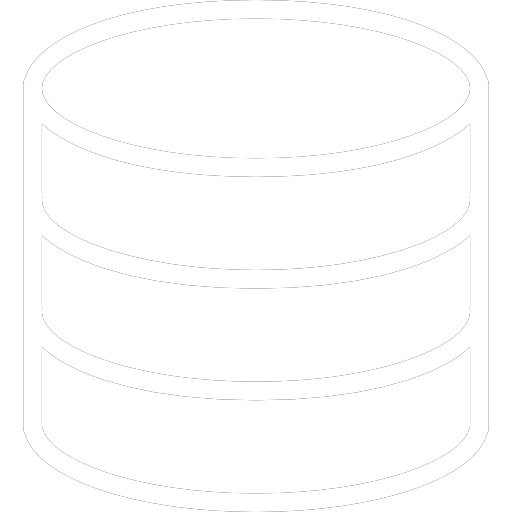

In this project, I designed a solution that enabled wheelchair users to receive an improved quality of exercise. The design process was grounded in various aspects of biomedical design, starting from problem identification to prototype presentation.
To achieve this, I utilized a range of technical skills, including SolidWorks and C++, which were used for making the prototype design and data encryption, respectively. In addition, machine shop skills were utilized for the fabrication of the prototype. To ensure the project's success, I also used MS Office for the presentations and reports, which helped me effectively communicate my design and its features.
As part of the design process, I created a visual abstract using Canva, which effectively communicated the project's key features in a visually appealing way. The visual abstract was an important component of the project as it helped to engage the target audience and clearly communicate the design's objectives.
Overall, this project was a success and allowed me to apply a range of technical skills and design principles to address an important challenge in the biomedical field. The use of different software and technical skills, combined with a focus on the target users' needs, enabled me to create an effective solution that enhanced the quality of life for wheelchair users.
Random Database
C++ Individual Project
In this project, I developed a C++ code that allowed users to input various values such as name, date of birth, email I.D., and other related information into a CSV file. This was accomplished by implementing robust input validation statements that prevented incorrect data from being entered.
To further enhance the functionality of the code, several features such as adding, viewing, modifying, and deleting data from the CSV file were integrated into the program. This allowed users to easily manage and manipulate the data within the CSV file as needed.
The code was designed and implemented using object-oriented programming (OOP) principles. This ensured that the code was modular, flexible, and easy to maintain. Furthermore, by employing OOP, the code was able to achieve greater levels of abstraction and encapsulation, resulting in code that was more organized and easier to understand.
Overall, the project was successful in creating a robust C++ code that allowed for efficient input, management, and manipulation of data within a CSV file. The implementation of input validation statements and the use of OOP principles made the code more reliable and user-friendly.

B-Mode
BME 121 Individual Project
In this project, I developed a C++ code to generate a 2D image using input data from an ultrasound scanner. To accomplish this, I applied several programming concepts such as classes, functions, and linked lists. Object-oriented programming (OOP) was also utilized in the design and implementation of the code.
To ensure the success of the project, I engaged in multiple iterations of testing and debugging to guarantee that the code was error-free and producing the desired output. The final results were satisfying and aligned with the project objectives.
In addition to the programming work, I also wrote a comprehensive report detailing the code's design and implementation. This report was written using Microsoft Word and presented my findings in a clear and concise manner.

Pregnancy and Related Complications, MTP
High School Individual Project
For this project, I conducted extensive research using information available on the internet and from our school textbook. This research formed the foundation of the project and helped me to gain a deeper understanding of the topic. As part of this process, I also included a case study based on a medical case I found online.
To present the findings of the project, I used MS PowerPoint to create a visually appealing and engaging presentation. The presentation allowed me to effectively communicate the key findings of the research and the case study to my classmates.
Overall, this project allowed me to develop my research and presentation skills while deepening my understanding of the subject matter. The use of a case study provided a real-world context that allowed me to apply my knowledge and gain a deeper appreciation of the topic. The use of MS PowerPoint was an effective tool for presenting the project and helped me to communicate the key findings to my audience in an engaging and memorable way.

Club Website
HTML/CSS Individual Project
As a member of the Gavel Club, I collaborated with another club member to develop the first version of the club's website. Using HTML and CSS, we designed and implemented a website that effectively showcased the club's activities, goals, and achievements.
During the development process, we ensured that the website was user-friendly and easy to navigate. We also incorporated various design elements to make the website visually appealing and engaging for visitors.
Working collaboratively, we were able to leverage our individual skills and strengths to create a website that effectively represented the Gavel Club. By combining our knowledge of HTML and CSS, we were able to bring our vision for the website to life.
Overall, developing the Gavel Club website was a rewarding experience that allowed me to apply my web development skills in a real-world context. Working collaboratively with another club member was a valuable learning experience that taught me the importance of teamwork and communication in achieving a common goal.